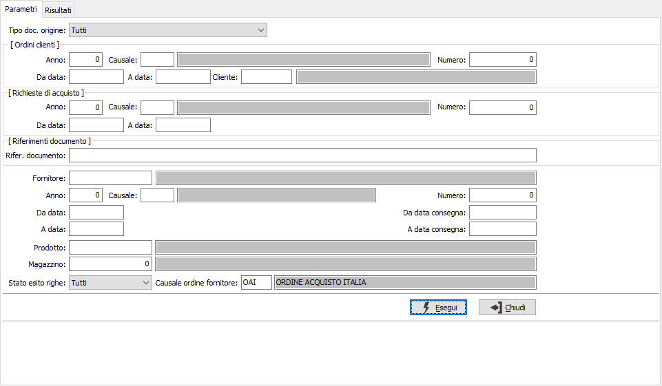
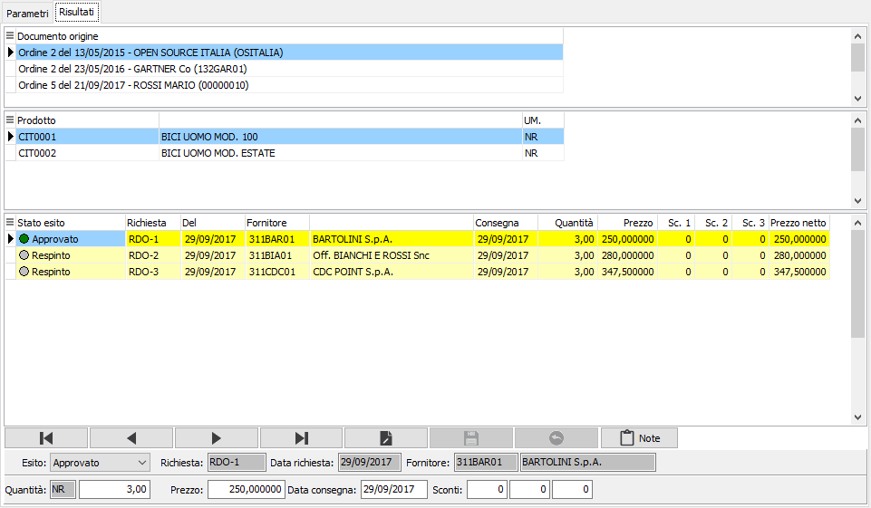
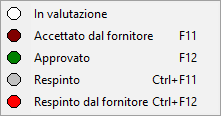
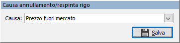
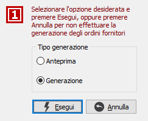
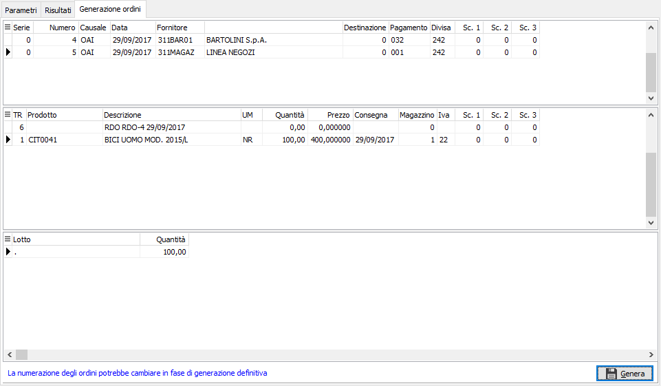
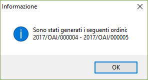

Esito richieste
La procedura consente di effettuare o modificare l'esito delle richieste di offerte, cioè di determinare lo stato delle singole righe dei documenti presenti; inoltre permette di generare gli ordini fornitori. Nel caso la generazione degli ordini avvenga da richieste di offerta derivanti da richieste di acquisto, su quest'ultime sarà aggiornato lo stato delle righe e, se gestita, anche la cronologia.
La finestra principale si articola su due pagine: una per i parametri di selezione delle richieste di offerta e l'altra con il risultato dell'elaborazione, ovvero le righe delle richieste selezionate; da questa pagina sarà possibile assegnare gli stati di esito ed effettuare la generazione degli ordini fornitori, in questa sezione sarà possibile apportare anche delle modifiche relativamente alle condizioni della richiesta quali quantità, prezzi, sconti e consegna.

tipo documento di origine: il campo determina il criterio di selezione principale relativo alla richieste di offerta; consente di selezionare le righe delle richieste in base al documento che le ha originate, è possibile scegliere fra ordini clienti, richieste di acquisto, riferimenti manuali e richieste inserite manualmente quindi senza documento di origine oppure tutte le tipologie. Nel caso si selezioni ordini clienti o richieste di acquisto sarà possibile specificare, nei riquadri sottostanti, ulteriori criteri di selezione relativi al documento di origine, come specificato di seguito.
Se selezionato il documento di origine Ordini clienti:
ANNO: indica l'anno degli ordini a cui si vuole limitare la selezione.
CAUSALE: eventuale codice della Causale ordini a cui si vuole limitare la selezione. Sul campo sono attive le funzioni di ricerca (F9).
NUMERO: indica il numero dell'ordine a cui si vuole limitare la selezione, in combinazione con anno e/o causale.
DA DATA: eventuale data dell'ordine da cui deve iniziare l’analisi dei documenti relativamente ai precedenti parametri di selezione. Confermando a vuoto, l’analisi inizia con il primo documento valido.
A DATA: eventuale data dell'ordine con cui si desidera terminare l’analisi dei documenti relativamente ai precedenti parametri di selezione. Confermando a vuoto, l’analisi si conclude con l'ultimo documento valido.
CLIENTE: eventuale codice del cliente intestatario dell'ordine, a cui si vuole limitare la selezione. Sul campo sono attive le funzioni di ricerca (F9).
Se selezionato il documento di origine Richieste di acquisto:
ANNO: indica l'anno delle richieste di acquisto a cui si vuole limitare la selezione.
CAUSALE: eventuale codice della Causale richiesta di acquisto a cui si vuole limitare la selezione. Sul campo sono attive le funzioni di ricerca (F9).
NUMERO: indica il numero della richieste di acquisto a cui si vuole limitare la selezione, in combinazione con anno e/o causale.
DA DATA: eventuale data delle richieste di acquisto da cui deve iniziare l’analisi dei documenti relativamente ai precedenti parametri di selezione. Confermando a vuoto, l’analisi inizia con il primo documento valido.
A DATA: eventuale data delle richieste di acquisto con cui si desidera terminare l’analisi dei documenti relativamente ai precedenti parametri di selezione. Confermando a vuoto, l’analisi si conclude con l'ultimo documento valido.
Se selezionato il documento di origine Da riferimenti manuali:
RIFER. DOCUMENTO: è possibile indicare il riferimento specifico ad un documento.
I restanti parametri sono relativi alla selezione delle righe di richiesta di offerta:
FORNITORE: è il codice del fornitore da utilizzare per la selezione delle richieste di offerta. Sul campo sono attive le funzioni di ricerca (F9).
ANNO: indica l'anno delle richieste di offerta a cui si vuole limitare la selezione.
CAUSALE: eventuale codice della Causale richiesta di offerta a cui si vuole limitare la selezione. Sul campo sono attive le funzioni di ricerca (F9).
NUMERO: indica il numero della richieste di offerta a cui si vuole limitare la selezione, in combinazione con anno e/o causale.
DA DATA: eventuale data delle richieste di offerta da cui deve iniziare l’analisi dei documenti relativamente ai precedenti parametri di selezione. Confermando a vuoto, l’analisi inizia con il primo documento valido.
A DATA: eventuale data delle richieste di offerta con cui si desidera terminare l’analisi dei documenti relativamente ai precedenti parametri di selezione. Confermando a vuoto, l’analisi si conclude con l'ultimo documento valido.
DA DATA CONSEGNA: eventuale data di consegna delle richieste di offerta da cui deve iniziare l’analisi dei documenti relativamente ai precedenti parametri di selezione. Confermando a vuoto, l’analisi inizia con il primo documento valido.
A DATA CONSEGNA: eventuale data di consegna delle richieste di offerta con cui si desidera terminare l’analisi dei documenti relativamente ai precedenti parametri di selezione. Confermando a vuoto, l’analisi si conclude con l'ultimo documento valido.
PRODOTTO: eventuale codice del prodotto, a cui si vuole limitare la selezione. Sul campo sono attive le funzioni di ricerca (F9).
MAGAZZINO: eventuale codice del magazzino, a cui si vuole limitare la selezione. Sul campo sono attive le funzioni di ricerca (F9).
STATO ESITO RIGHE: definisce quali tipologie di righe, si desidera elaborare: tutti, in valutazione, accettate dal fornitore, approvate, respinte, respinte dal fornitore.
CAUSALE ORDINE FORNITORE: codice della causale con cui saranno generati gli ordini, viene proposta quella definita in configurazione. Se viene lasciata vuota sarà assegnata quella indicata sull'anagrafica del fornitore. Sul campo sono attive le funzioni di ricerca (F9).
La pressione sul pulsante Esegui determina l'avvio dell'elaborazione; se saranno trovati documenti validi verranno riportati i dati derivanti dalle righe di richiesta di offerta e visualizzati nella pagina risultati, da cui sarà possibile effettuare l'esito, la manutenzione e la generazione degli ordini fornitori.
Questa sezione appare divisa in tre parti: la parte superiore che contiene i documenti di origine delle richieste di offerta; in base alla selezione potranno trovarvisi ordini clienti, richieste di acquisto, riferimenti inseriti manualmente in fase di generazione e dei quali sarà visualizzato il riferimento documento oppure una dicitura "Nessun documento di origine" o tutte le tre tipologia; in corrispondenza di un documento di origine, o "Nessuno", nella griglia centrale saranno visualizzati i prodotti relativi e nella parte inferiore le righe delle richieste di acquisto collegate mostrate sia in griglia che nel pannello di modifica dei dati che sarà abilitato solo per righe Approvate o Accettate dal fornitore, solo per alcuni campi, per le righe Annullate o Respinte dal fornitore.


In questa ultima sezione potranno trovarsi più richieste relative allo stesso prodotto/documento di origine ed è da qui che ne sarà determinato l'esito; tramite il clic destro del mouse si può richiamare il menù mostrato a lato selezionando una voce, o utilizzando i relativi tasti funzione, sarà determinato l'esito del rigo su cui si è posizionati. Se il rigo viene Approvato, le altre righe presenti, appartenenti ad altri fornitori, saranno Respinte in automatico e nelle note del rigo sarà inserita la motivazione, cioè l'approvazione dell'altro rigo. In ogni riga l'esito viene mostrato con un colore diverso, in più le righe modificate rispetto all'inizio dell'elaborazione appariranno su sfondo giallo chiaro e le righe approvate su sfondo giallo. Nel caso un rigo venga Respinto manualmente o Respinto dal fornitore, si aprirà in automatico
una finestra per selezionare la causa che ha portato a tale decisione. La finestra mostrata a lato riporterà l'elenco di tutte le cause presenti nell'apposita tabella Cause annullamento/respinta richieste ed una volta selezionata la causa il testo presente nel campo memo della causa sarà riportato nelle note di esito del rigo oggetto dell'esito.Al momento dell'approvazione sono attivi dei controlli non bloccanti che avvisano l'operatore se sta approvando un rigo ed esistono altre righe ancora da valutare, oppure con prezzo o data consegna più favorevoli.
Inoltre se saranno approvate righe relative a prodotti o fornitori provvisori sarà visualizzato un avviso che invita ad effettuare la definizione per poter effettuare la generazione degli ordini fornitori; questo non compromette il salvataggio dei dati, ma comporta l'utilizzo dell'apposita procedura di definizione per poi accedere nuovamente all'esito per effettuare la generazione degli ordini fornitori.
Le righe Approvate o Accettate dal fornitore attivano il pannello di input che consente la modifica della quantità, del prezzo, degli sconti e della data di consegna. Se attiva la gestione del dettaglio quantità è presente il bottone dettaglio, a destra del campo, tramite il quale sarà visualizzata la relativa finestra di dettaglio quantità; l'attivazione della finestra avviene comunque in automatico al momento dell'accesso al campo quantità; se in questa fase non si inserisce un prezzo sulle richieste presenti a prezzo zero non sarà possibile generare gli ordini a fornitore.
Al termine delle modifiche, con la pressione sul bottone Salva della toolbar o del tasto F10, verrà richiesto se effettuare il salvataggio dei dati relativi all'esito delle richieste di offerta e se presenti righe Approvate relative a fornitori e prodotti effettivi, non provvisori, sarà mostrata la finestra per la generazione degli ordini.

La finestra consente di selezionare un'opzione per effettuare la generazione diretta degli ordini oppure accedere ad una fase di anteprima da cui controllare quali ordini saranno generati e la loro struttura definitiva.

La sezione mostra quali ordini saranno generati indicando che la numerazione potrebbe non essere quella definitiva in caso altri utenti stiano contemporaneamente inserendo altri ordini. La sezione è suddivisa in tre parti: la griglia in alto che contiene i dati di testa, la griglia centrale che contiene le righe e, se attiva la gestione, la griglia inferiore che mostra i dettagli delle righe.
Sia dalla finestra di generazione precedente che da questa sezione è possibile annullare la sola generazione degli ordini fornitori tramite il pulsante Annulla, per la finestra precedente, o da questa sezione il pulsante Annulla della toolbar o l'utilizzo del tasto ESC; la generazione sarà di nuovo possibile semplicemente riselezionando i documenti per l'esito, senza apportare alcuna modifica in quanto l'esito è già stato effettuato.

La pressione del pulsante Esegui della finestra precedente con l'opzione generazione attiva o del pulsante Genera, o del tasto F10 da questa pagina consentirà l'effettiva generazione degli ordini fornitori; al termine della generazione comparirà una finestra, come quella mostrata a lato, dove saranno indicati gli estremi degli ordini fornitori generati.Successivamente sarà richiesto se si desidera effettuare la stampa degli ordini fornitori generati.